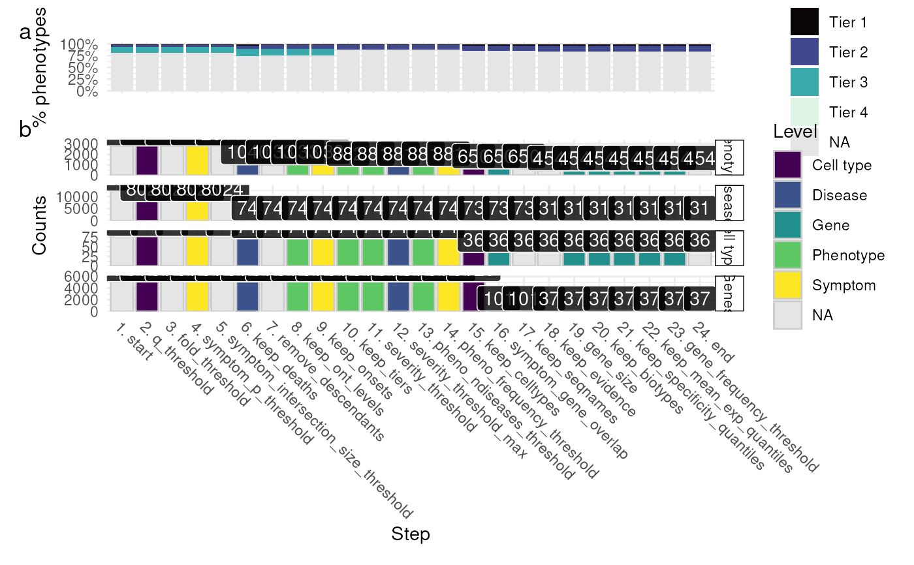

Plot the results of a filtering report generated by prioritise_targets.
plot_report(
rep_dt,
results,
phenotype_to_genes = HPOExplorer::load_phenotype_to_genes(1),
annot = HPOExplorer::load_phenotype_to_genes(3),
remove_cols = c("Rows", "Rows_diff", "ids"),
label.size = 0.25,
show_plot = TRUE,
add_tiers = TRUE,
save_path = tempfile(fileext = "_plot_report.pdf"),
verbose = TRUE,
...
)Report table.
The cell type-phenotype enrichment results generated by gen_results and merged together with merge_results
Phenotype to gene mapping from load_phenotype_to_genes.
HPO annotations.
Columns to remove from rep_dt.
Size of label border, in mm.
Print the plot to the console.
Add severity tiers subplot.
Save the plot to a file.
Set to NULL to not save the plot.
Print messages.
Arguments passed on to ggplot2::ggsave
filenameFile name to create on disk.
plotPlot to save, defaults to last plot displayed.
deviceDevice to use. Can either be a device function
(e.g. png), or one of "eps", "ps", "tex" (pictex),
"pdf", "jpeg", "tiff", "png", "bmp", "svg" or "wmf" (windows only). If
NULL (default), the device is guessed based on the filename extension.
pathPath of the directory to save plot to: path and filename
are combined to create the fully qualified file name. Defaults to the
working directory.
scaleMultiplicative scaling factor.
width,heightPlot size in units expressed by the units argument.
If not supplied, uses the size of the current graphics device.
unitsOne of the following units in which the width and height
arguments are expressed: "in", "cm", "mm" or "px".
dpiPlot resolution. Also accepts a string input: "retina" (320), "print" (300), or "screen" (72). Applies only to raster output types.
limitsizeWhen TRUE (the default), ggsave() will not
save images larger than 50x50 inches, to prevent the common error of
specifying dimensions in pixels.
bgBackground colour. If NULL, uses the plot.background fill value
from the plot theme.
create.dirWhether to create new directories if a non-existing
directory is specified in the filename or path (TRUE) or return an
error (FALSE, default). If FALSE and run in an interactive session,
a prompt will appear asking to create a new directory when necessary.
ggplot object
results <- load_example_results()
rep_dt <- example_targets$report
gp <- plot_report(rep_dt=rep_dt, results=results)
#> plot_report:: Preparing data.
#> Warning: column not removed because not found: [Rows_diff]
#> Reading cached RDS file: phenotype.hpoa
#> + Version: v2025-05-06
#> Reading cached RDS file: phenotype_to_genes.txt
#> + Version: v2025-05-06
#> plot_report:: Preparing plot.

#> Saving plot ==> /tmp/Rtmpm3kZ9w/file10115d024538_plot_report.pdf
#> Saving 6.67 x 6.67 in image